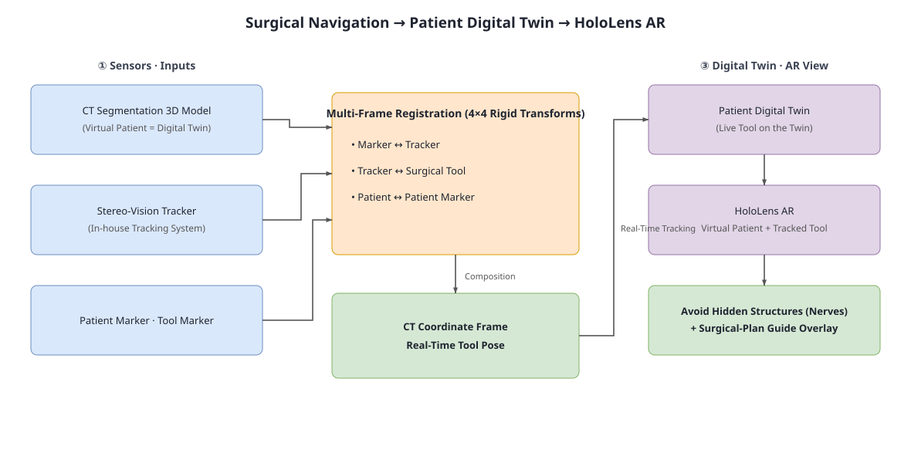

3D SPATIAL COMPUTING · RESEARCH ENGINEER
Turn spatial uncertainty into systems teams can trust.
I work across registration, perception, XR, and digital twins as a hands-on technical-lead IC—owning problem framing, integration decisions, and verification.
EVIDENCE REGISTRATION · PUBLIC EVIDENCE
Where decisions became working systems.
05 TRANSFERABLE CAPABILITIES
Problem classes I repeatedly solve.
JavaScript renders the capability map. Read the capability summary or browse project case studies.
OUTCOME EVIDENCE
Changes that held up in practice.
Estimated delivery time for comparable sensor-validation tooling with AI-assisted implementation and human review
Typical field-trip cadence after LiteSim enabled pre-field validation
HoloLens SDK probes used to select critical functions before main-system integration
DECISION LOOP · 01—03
Define first. Probe small. Integrate what survives.
Translate the domain
Turn clinical, robotic, and sensing constraints into coordinate definitions, test scenarios, and acceptance criteria.
Probe before committing
Use small parallel PoCs to expose SDK, sensor, and integration risks while changing direction is still cheap.
Integrate what survives
Use AI for implementation throughput while humans own requirements, system decisions, review gates, and merge quality.
CONTACT · SENIOR R&D
Have a difficult spatial problem to validate?
I am looking for a hands-on technical-lead IC role connecting 3D registration, sensor validation, digital twins, and clinical XR.